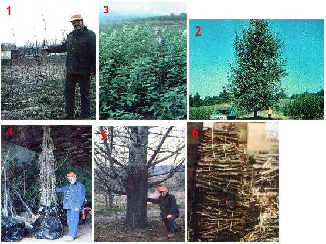
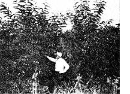

Presenting a fast-growing answer to America 's energy crisis!
Pennsylvania Dutch country would appearto many folks-an unlikely place in which to find a solution to this nation's energy problems. The fertile fields roll toward the horizon ... prosperous farms dot the landscape ... and local folks use horses and buggies for transportation! Yet deep in the rich Amish and Mennonite farm country-near Ephrata, Pennsylvania-grow rows of trees that may someday set us free from our gasoline bondage . . . and can already provide low-cost heat for the homestead house.
The hybrid poplar trees flourishing at the Miles W. Fry & Son Nursery have a couple of fascinating characteristics. First, they grow rapidly . . . really rapidly. A ten-inch-long uprooted cutting, for instance, will shoot up 5 to 8 feet in one year . . . will grow to between 10 and 14 feet in two years ... and will top 25 feet in five years. What's more, when you harvest that 5-year-old tree, a replacement begins growing from the stump. And-because this second growth has a fully mature root system to feed it-it grows to harvestable size even more quickly than did its "parent"! According to Morton Fry, head of the nursery, at least six crops can be harvested from the same stump!
That's all very interesting, you may well say . . . but cars can't run on trees! Well, the fact is that they can, after the hardwoods have been converted to ethanol. Corn isn't the only feedstock that can be used for the production of alcohol, and a darned good case can be made for the economic benefits of producing ethanol from hybrid poplar wood chips. Research into cellulosic conversion is currently going on at Dr. E. Kendall Pye's University of Pennsylvania laboratories ... funded in part by General Electric and the Department of Energy.
And Dr. Pye--with the cooperation of the folks at the Fry Nursery-has come up with some projections that should make our energy planners sit up and take notice. For instance: All of America 's automobiles could be fueled by the alcohol produced from 120 million acres of hybrid poplars.
Sure, that sounds like a lot of land . . . but it's been estimated (by the Department of Energy) that there are 500 million acres available for such purposes in this country right now. And that figure doesn't include our million so facres of mine spoils and sanitary landfills "waste" areas on!which the poplars reportedly thrive-or the unused land along highway right-of ways. The fact is that there's an abundance of marginal and submarginal acre age available for energy plantations . . . and the poplar people have some pretty big plans ready to make use of that land.
Such large-scale projects are complemented by more individual-scale plans, too. Of course, any operation that intends to turn out 220 billion gallons of fuel per year has got to be big. If America were to convert completely to ethanol fuels, we would need some 11,000 of the 20-million gallon-peryear distilleries that appear to be the most efficient size for such a purpose . . . and that kind of alcohol production can't be considered a backyard operation by any stretch of the imagination. (By way of comparison, running MOTHER's "in the works" 12-inch column still eight hours a day for 356 days a year-holidays off-would produce just 62,500 gallons annually!)
But-while such a project would be massive overall-it would be a diffuse technology: The 11,000 distilleries would be located around the nation and be fed wood chips grown locally . . . within a few miles of the plant. According to Dr. Pye, "Anyone with a small piece of land could be involved. Such a project could produce income in many places where there's now only a meager agricultural base . . . and no industrial base at all."
In fact, this unique form of silviculture could be a real boon to the small farmer or landowner. Dr. Pye estimates that growing hybrid poplars for energy uses can produce from three to four times as much income as does growing corn . . . a net profit per acre of $200! And-unlike corna poplar crop doesn't involve an annual plowing/disk-harrowing process. Once the trees are in and growing, maintenance is minimal . . . the major job is harvesting.
WHAT'S INVOLVED
Morton Fry envisions the future energy plantations as consisting of plots of land - fields as small as two or three acres would be large enough-planted with hybrid poplars spaced two feet apart in the row . . . with three feet, six inches between the rows. At such a density, there would be approximately 6,200 trees per acre.
The first crop would be ready for harvest at the end of four years, and should produce an average of 24 pounds of green wood per tree ... equaling about 36 dry tons per acre. According to Fry, such production would yield approximately 39,000 pounds of glucose and 18,000 pounds of hemicellulose . . . which could, in turn, be converted into 3,600 gallons of ethanol and butanol per acre.
After that first harvest, the replacement trees would be cut every two years (Fry suggests harvesting alternate fields each year) . . . producing a sustained crop of 15 dry tons per acre per year. Dr. Pye's economic analysis projects a payment to the silviculturist of $22.50 a dry ton . . . which adds up to a hefty gross of $337.50 per acre per year!
PROCESSING
The poplars would be harvested and chipped in one operation, using forestry machinery which could be cooperatively owned-as combines often are-or sup plied by the local distillery. The chipped trees would then be introduced into a pressure vessel, together with a water-butanol or water-ethanol solvent, and cooked at 165°C for 30 minutes at a pressure of 200 PSI. This treatment is necessary to strip the lignin-the binder substance that gives wood its rigidity-away from the cellulose . . . so that the carbohydrate will be available for conversion to glucose.
The cellulose and hemicellulose can then be separately converted through the action of enzymes ... and the resulting sugary 12-20% glucose solution fermented into alcohol by standard methods, and distilled to the desired proof. The key to the whole process is the delignification: There's plenty of carbohydrate in wood that's just waiting to be converted to sugar and then alcohol, if only the protective covering of lignin can be removed.
Dr. Pye has developed two methods to achieve the conversion of cellulose to alcohol ... one of which is extraordinarily efficient, and the other a shortcut. The former-which is known as the Penn/G.E. process-will, it's estimated, be commercially useful within the next six to seven years. This form of extractive fermentation attempts to make the most of all available byproducts.
The lignin, for example, is taken off in a high molecular weight form which is valuable as a base for polymers . .. and the ethanol- or butanol-andwater solvent used for delignification is recycled. The shortcut method-which is a less sophisticated form of the above procedure and is only about two years away from commercial use-is designed to produce relatively low-cost alcohol without worrying too much about capturing the by-products.
The Penn/G.E. process should be capable of delivering anhydrous ethanol at a materials and production cost of about 80-85c a gallon . . . or $1.00 a gallon to the wholesaler with the manufacturer's profit included. Estimates are that the shortcut process can come close to those prices, too. Making alcohol from hybrid poplars thus offers a perfect way to insulate ethanol costs from the fluctuations of corn prices ... and could free up grain crops that may well be needed to feed an increasingly hungry world in the future.
WOOD? LOTS!
Of course, the most practical immediate application of hybrid poplars is in woodlots .. . producing firewood for the small landowner. Morton Fry claims-and he backs up his assertions with solid figures-that most folks can be firewoodselfsufficient with a woodlot of just one acre! Now that sounds impossible ... we've all been taught that the best sustained yield one can expect from a oneacre woodlot is one cord a year. That's just not so with the poplars, however: Fry says that homesteaders can cut five to ten cords a year, every year . . . and never (for at least a 14year period) run out of fuel.
Here's how it's done: The trees are planted on six-foot centers, so an acre will contain about 1,200 poplars. After four years, the estimated amount of wood on the plot will be between 20 and 40 cords. Following this growth period, one-quarter of the acre is clear-cut, and the four- to five-inch diameter logs (between five and ten cords of them) are stacked for aging.
At the end of the fifth year, the wood from the first quarter-acre has become air dried and ready to burn . . . and the second quarter-acre's crop is cut and stacked to age. Meanwhile, on the section of field that was timbered the preceding year, new growth has sprung from the stumps. The landowner simply selects the healthiest leader on each stump and lops off the competition . . . and in four years another five to ten cords of hybrid poplar will be ready to harvest from that first quarter-acre.
Actually, there are two ways to manage such a woodlot. One, described above, involves planting the entire acre and then harvesting a quarter at a time, starting in the fourth year. The second (and less expensive) system is based on planting just a quarter-acre per year . . . with the harvest rotation following the planting cycle four years later. The advantage of this method is that each season's new plantings can be made by using cuttings from the trees that were set out the year before ... so you pay for only 300 trees instead of 1,200.
Morton Fry describes hybrid poplar as a "gofer" wood ... since poplar is less dense than many of the more traditional firewoods, and you'll have to "go fer'' an armload of fuel a little more often. Some comparisons are useful in understanding the situation: A "cord" of the hybrids2,700 pounds of air-dried wood, according to Fry-contains 18,700,000 BTU . . . while a cord of white oak (128 cubic feet, or a pile eight feet long, four feet wide, and four feet high) contains 37,500,000 BTU. This means that there's approximately the same number of BTU in two cords of hybrid poplar as in one cord of white oak. In other words, if you know how much oak you needed to heat your home last winter, it's easy to figure-by simply doubling your past consumption-how many cords of the fastgrowing trees will be require
Of course, if you used other hardwoods in the past, you can still determine the ratio of poplar to your previous fuel by checking the BTU content of your former burning material in a woodburner's reference manual. (EDITOR'S NOTE: There are a number of fine guides on the market. For this study, we relied on figures from the Northeastern State and Private Forestry Service of the U.S. Department of Agriculture, as printed in the Fry catalog.) Now oak is an ideal firewood, and poplar requires twice as many trips to the woodpile . . . but you'd be hard pressed to find a type of oak that could heat a home year after year from an acre of woodlot!
HOW TO GROW 'EM
Planting a stand of hybrid poplars for fuel purposes is simplicity itself. The Fry nursery will sell you uprooted cuttings, 44
which you simply set in the ground after the last frost. (The short pieces of wood are really rarin' to go, too . . . in fact, two samples that we'd stored in a filing cabinet leafed out in those dark confines!) After the earth has been plowed to a depth of six inches or more and then diskharrowed, enrich the soil with an organic 10-3-3 fertilizer.
The cuttings should be placed on sixfoot centers, and set at a depth of six to eight inches. It's important that the growth of the saplings be unchecked during the first year, so make sure that you cultivate your firewood plantation to keep down weed competition. At the end of the first growing season-after the trees have gone dormantyou can take one (actually, as many as eight will be available!) cutting per tree ... to provide the 300 free uprooted cuttings you'll need for the next season's quarter-acre planting. (Bundle the sticks in damp peat moss, and keep them chilled until springtime.)
COST COMPARISONS
The idea of obtaining heating self-sufficiency on as little as an acre of land is certainly appealing, but what about the economics of a hybrid poplar woodlot? In a word . . . they're terrific! Here are the figures for ten years of wood heating:
Homegrown Poplars
50 cords $674 ($13.48 each)
Purchased Oak
25 cords $1,875 ($75 each)
This gives a saving of $1,201 over the tenyear period for the low yield estimate for poplars. If we take the high yield estimate for the fast growing trees (ten cords per acre per year), the price advantage is even more impressive:
Homegrown Poplars
100 cords $674 ($6.74 each)
Purchased Oak
50 cords $3,750 ($75 each)
As you can see, in such a case the saving over ten years is a whopping $3,076!
In compiling these figures, we've assumed that poplar has half the heat value of oak. Included in the cost of poplar firewood are the following: plowing, disk-harrowing, fertilizer and organic insecticides, and 300 plants. No cost was attributed to the labor of annual fertilizing and insecticide spraying, and we figured that the labor of harvesting the stove-sized poplars would be offset by the effort involved in splitting the largerdiameter purchased firewood.
Two additional points should be made here: First, the hybrid poplars must grow four years before the first firewood cutting is possible . . . and, during that time, purchased fuel will be required. Second, the assumed price of a cord of oak-while accurate at the moment-is quite likely to be far higher at the end of the next ten years . . . especially with the prices of competing fuels constantly increasing.
AND MORE...
Dr. Pye and the Frys are not "resting on their poplars", either. They have under development-but still too far from completion to describe in detail-a homestead wood gasification setup that will use poplars to produce plenty of methane-rich "producer gas" to run a homestead's various vehicles.
There'll be more news about these wonder trees out of Pennsylvania, so keep your eyes on MOTHER's pages. In the meantime, though-as fuel oil prices climb above a dollar a gallon and the deregulation of natural gas costs seems a certainty-it looks as if an acre or two planted in hybrid poplars could be one of the best investments anyone interested in self-sufficiency could make!
ON THE HORIZON
Two-year-old black locust trees flourish on some marginal Georgia soil.
Research into using biomass as a source of energy is proceeding at a furious pace, and same trees other than hybrid poplars have also shown promise as ethanol producers. At the University of Georgia, for example, the energy potential of sycamores, black locusts, black alders, and sweet gums has been investigated . . . with considerable success.
In Texas , the Chinese Tallow Tree (Sapium sebiferum) is presently the subject of much, research ... in part, because of its tolerance, to saline water. Studies in brackish water areas of California have focused on the salt cedar and the tamarisk shrub. In. the Midwest, attention has turned to the red alder, the cottonwood (a close relative of the hybrid poplar), the sugar maple, and the autumn alive . . . while in warmer climates, the eucalyptus has begun to be .studied.
Furthermore, Diane Knappert, a graduate student at Dartmouth , recently developed a highly efficient dilute arid technique which has achieved a 100% cellulose conversion efficiency.
So, while millions are being spent on further depleting our supplies of nonrenewable, resources, there is work going on to develop ecologically sound, decentralized, renewable sources of energy. Such studies may not get the media attention that the splashy--and expensiveshale oil research receives . . . but they'll be of crucial importance to the energy .future of our country!
|
 [1] Morton Fry holds a one-year plant that's over six feet tall. [2] This towering six-year-old tree began as a cutting. [3] In their first year of growth, these saplings are already three to four feet tall. [4] A group of two-year-old hybrid poplars ready for shipment. [5] The sturdy trunk of a 13-year-old hardwood. [6] These bundles of ten-inch cuttings are ready for shipment in the spring. Harvested while the trees were dormant, the sticks have been carried over the winter, refrigerated in damp peat moss. |
 |
|